Токио · Акасака · сладости
TORAYA в Акасаке: пятьсот лет ёкана, от императорского двора до Парижа
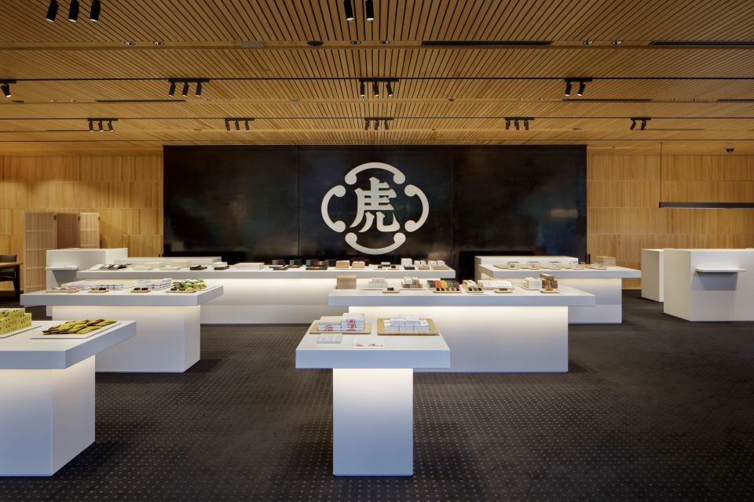
Кондитерский дом TORAYA основали в Киото в конце эпохи Муромати, и веками он поставлял сладости императорскому двору. Пятьсот лет истории не сделали его музеем: дом открывает кафе, выпускает новые сладости и рассказывает через них о японской культуре.
История
Как «Тора-я» стала TORAYA
В Киото, где дом начинал, TORAYA служил поставщиком императорского двора. Двор и знать доверяли ему с давних времён, и всё же дом никогда не останавливался на достигнутом. Во время Реставрации Мэйдзи он последовал за императором и открыл дело в Токио. После Великого землетрясения Канто здесь начали продавать сладости прямо в лавке и развозить их на машине, после войны открыли отделы в универмагах.
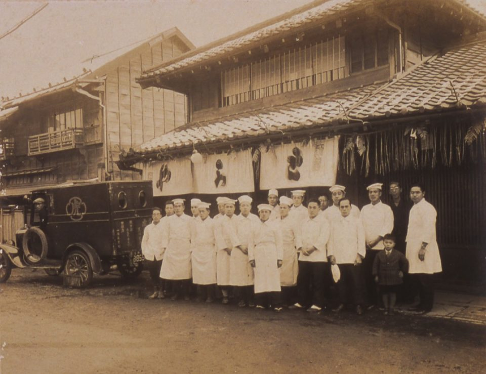
Расширяя сеть магазинов, дом не забывал о культуре: он основал собственный архив по истории японских сладостей «Тора-я бунко» и вышел в Париж. Идея парижского магазина окрепла у 16-го главы дома в 1979 году, после международной кондитерской выставки в Париже. Посетителей там интересовали не только сами сладости, но и японская культура и быт за ними. Глава дома убедился, что именно традиционные сладости вагаси помогают понять Японию, и уже в следующем году, в 1980-м, над парижской улицей повесили занавес-норэн с именем TORAYA.
Ёкан
Почему ёкан TORAYA так хорош
Ёкан TORAYA, плотный брусок из сладкой бобовой пасты и агара, знают по всей Японии. Он приятно тяжёлый в руке, сладость у него мягкая, а послевкусие чистое и короткое.
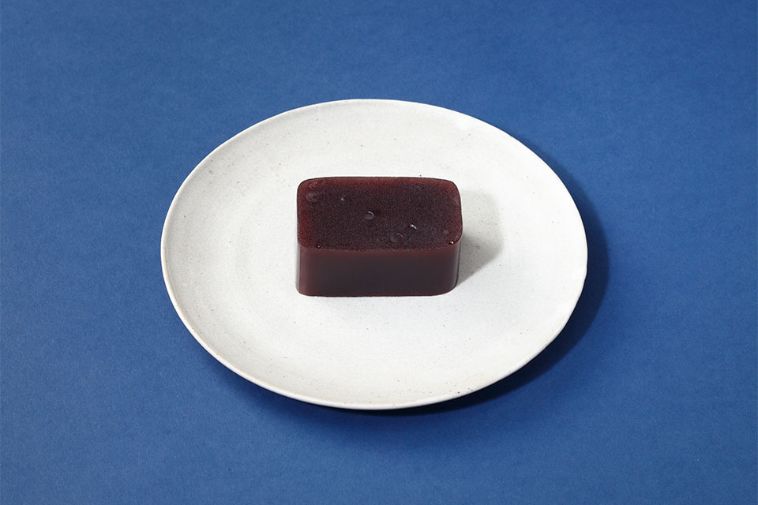
Рецепт держится на сырье. Фасоль адзуки сорта «Эримо» везут с Хоккайдо, сахар берут очень высокой очистки. Агар натуральный, в виде нитей: его сушат на солнце в горных деревнях префектур Нагано и Гифу. Воду используют подземную, с подножия Фудзи.
«Ёру-но умэ» и «Омокагэ»
Название «Ёру-но умэ» значит «ночная слива», хотя сливой этот ёкан не пахнет. Если его разрезать, на срезе видны целые зёрна адзуки, похожие на цветы сливы, распустившиеся в темноте. Вкус у него бобовый, сладость лёгкая и чистая.
«Омокагэ» значит «черты, всплывающие в памяти»: так говорят о лицах и картинах далёких дней. Этот ёкан варят на тёмном нерафинированном сахаре кокуто с острова Ириомотэ на Окинаве, и у него особый аромат и простая, немного деревенская сладость.
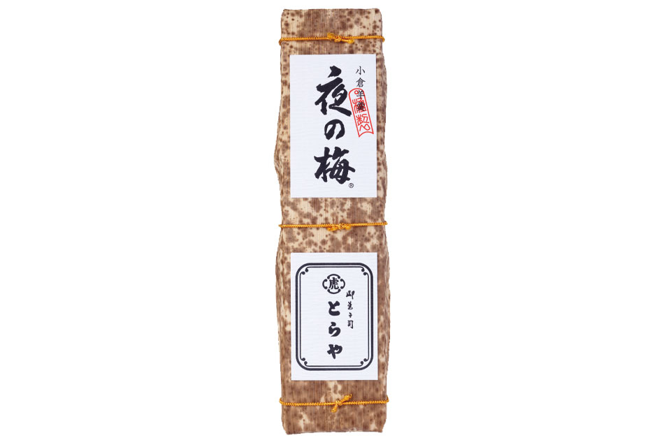
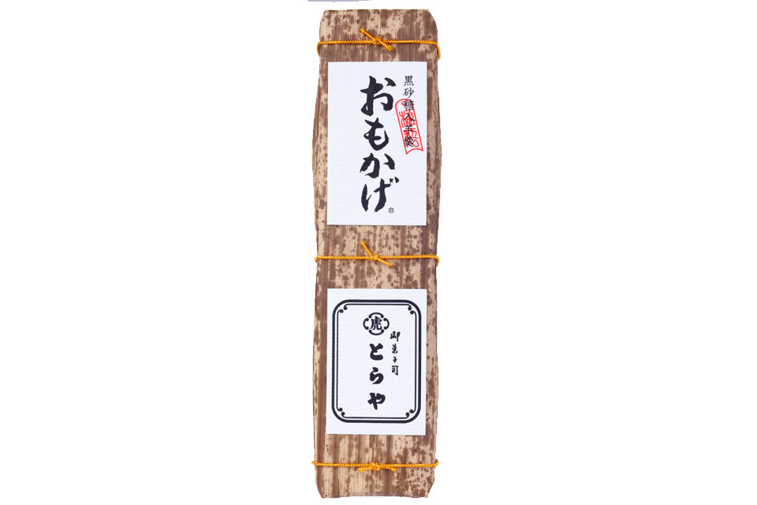
Сезоны
Ёкан на каждое время года
Новый год, праздник Сэцубун, праздник девочек Хинамацури: годовые обряды Японии издавна связаны со сладостями. Сезонные ёканы TORAYA делают из продуктов своего времени, и наслаждаются ими всеми чувствами. Вкус ощущает язык, красивую форму видят глаза, изящное название слышат уши, а тонкий аромат чувствует нос.
У каждого ёкана своё короткое время. В сезон 2019–2020 годов весной продавали «Хинагоромо» и «Сакура-но сато», в мае «Синтя-но сидзуку» из молодого чая, в июне «Кадзё муси-ёкан» к старинному обряду, когда сладостями отгоняли беды и звали удачу, летом «Мидзу-но ядори» и «Аою-но ка», осенью хризантемы «Титосэ-гику», а в декабре 2019 года к Новому году «Таканэкан» в форме Фудзи. Часть ёканов продавали только среднего размера.
В 2019 году средний сезонный ёкан стоил 1944 иены, большой в бамбуковом листе 3888 иен. «Кадзё муси-ёкан» стоил 2160 иен, «Таканэкан» 7884 иены за брусок и 3942 иены за половину большого бруска.
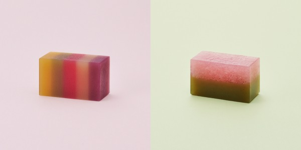
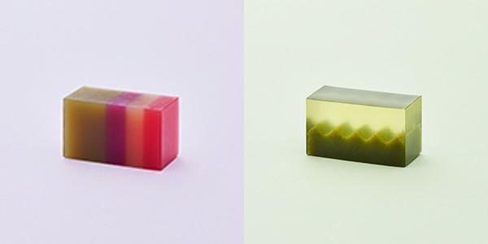
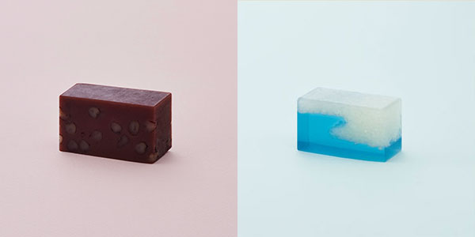
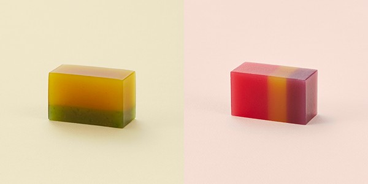
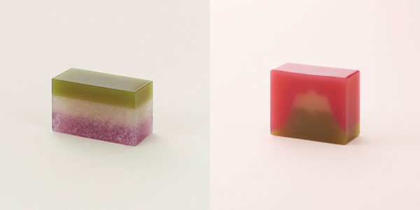
Ёканы к Новому году 2020
К Новому 2020 году дом выпустил ещё два ёкана: по знаку года и на тему, которую задают для новогоднего поэтического собрания при императорском дворе. Оба продавали с конца ноября 2019 года до января 2020 года, не во всех магазинах, средний стоил 1944 иены, большой в бамбуковом листе 3888 иен.
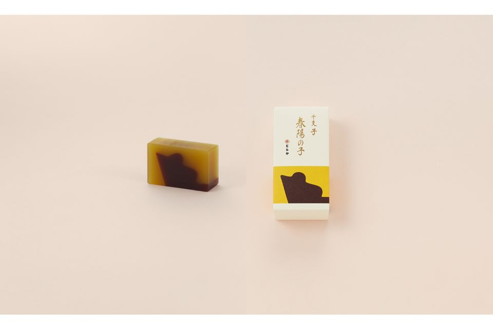
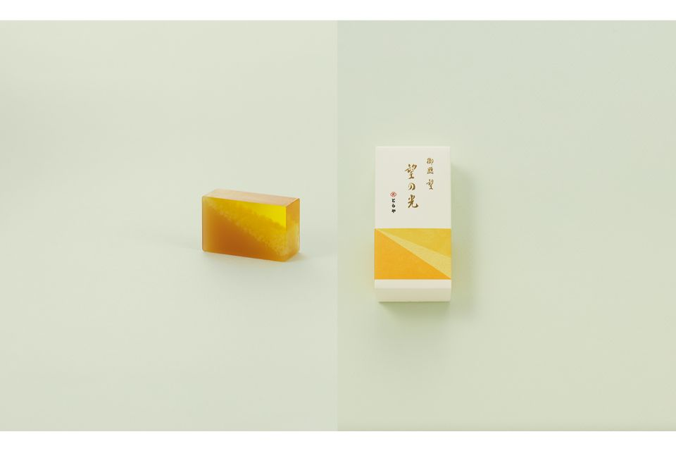
Магазин
Главный магазин в Акасаке
Магазин TORAYA в Акасаке обновили в 2018 году. Кроме продажи сладостей здесь есть галерея и кафе, и в Акасаке его любят как место, где можно передохнуть. Сюда стоит заглянуть с мыслями о пятисотлетней истории дома, а коробка ёкана станет хорошим подарком для тех, к кому едешь в гости.
TORAYA Akasaka
- Адрес
- Токио, район Минато, Акасака, 4-9-22
- Телефон
- +81 3-3408-4121
- Часы работы
- будни 8:30–19:00, суббота, воскресенье и праздники 9:30–18:00
- Выходные
- 6-е число каждого месяца (кроме декабря)